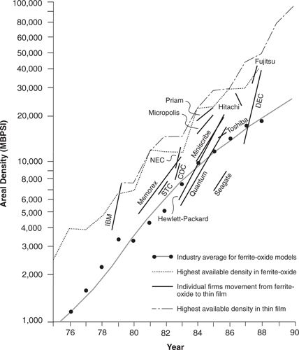

One of the watershed technologies affecting the pace at which disk drive makers have increased the recording density of their drives was the thin-film read/write head. We saw in chapter 1 that despite the radically different, competence-destroying character of the technology, the $100 million and five-to-fifteen year expense of developing it, the firms that led in this technology were the leading, established disk drive manufacturers.
Because of the risk involved in the technology’s development and its potential importance to the industry, the trade press began speculating in the late 1970s about which competitor would lead with thin-film heads. How far might conventional ferrite head technology be pushed? Would any drive makers get squeezed out of the industry race because they placed a late or wrong bet on the new head technology? Yet, it turned out, whether a firm led or followed in this innovation did not make a substantial difference in its competitive position. This is illustrated in Figures 6.1 and 6.2.
Figure 6.1 shows when each of the leading firms introduced its first model employing thin-film head technology. The vertical axis measures the recording density of the drive. The bottom end of the line for each firm denotes the maximum recording density it had achieved before it introduced a model with a thin-film head. The top end of each line indicates the density of the first model each company introduced with a thin-film head. Notice the wide disparity in the points at which the firms felt it was important to introduce the new technology. IBM led the industry, introducing its new head when it had achieved 3 megabits (Mb) per square inch. Memorex and Storage Technology similarly took a leadership posture with respect to this technology. At the other end, Fujitsu and Hitachi pushed the performance of conventional ferrite heads nearly ten times beyond the point where IBM first introduced the technology, choosing to be followers, rather than leaders, in thin-film technology.
Figure 6.1 Points at Which Thin-Film Technology Was Adopted by Leading Manufacturers, Relative to the Capabilities of Ferrite/Oxide Technology at the Time of the Switch

Source: Data are from various issues of Disk/Trend Report.
What benefit, if any, did leadership in this technology give to the pioneers? There is no evidence that the leaders gained any significant competitive advantage over the followers; none of the firms that pioneered thin-film technology gained significant market share on that account. In addition, pioneering firms appear not to have developed any sort of learning advantage enabling them to leverage their early lead to attain higher levels of density than did followers. Evidence of this is displayed in Figure 6.2. The horizontal axis shows the order in which the firms adopted thin-film heads. Hence, IBM was the first, Memorex, the second, and Fujitsu the fifteenth. The vertical axis gives the rank ordering of the recording density of the most advanced model marketed by each firm in 1989. If the early adopters of thin-film heads enjoyed some sort of experience-based advantage over the late adopters, then we would expect the points in the chart to slope generally from the upper left toward the lower right. The chart shows instead that there is no relationship between leadership and followership in thin-film heads and any subsequent technological edge. 1
Each of the other sustaining technologies in the industry’s history present a similar picture. There is no evidence that any of the leaders in developing and adopting sustaining technologies developed a discernible competitive advantage over the followers. 2